Что говорят владельцы баз
Слова перепечатаны из сообщений дословно. У каждой цитаты можно открыть исходный скриншот и проверить.
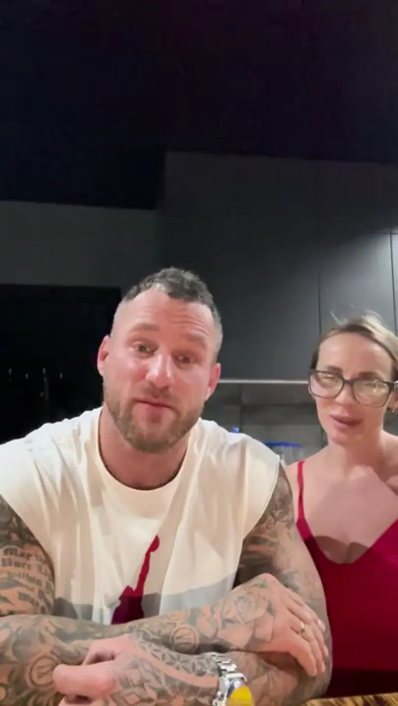
Максим и Кристинавыездная консультация с проектировщиком, БелорецкСмотреть отзыв · 4 минуты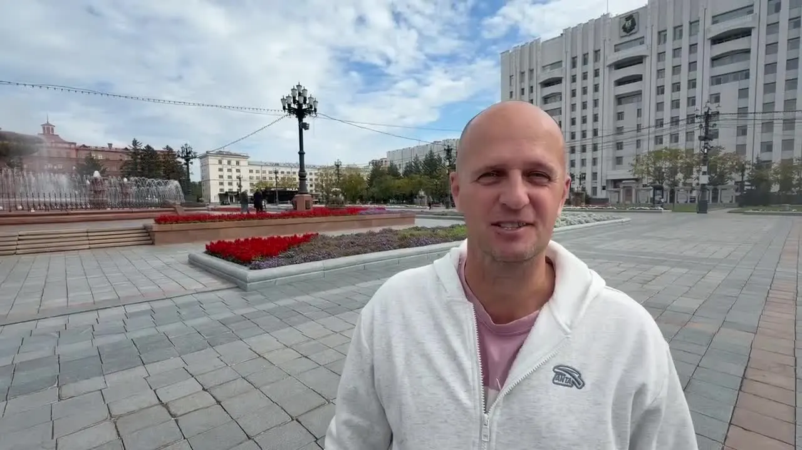
Алексейвыездная консультация, Уктур, Хабаровский крайСмотреть отзыв · 1,5 минутыСотрудничество нам понравилось. Александр очень отзывчивый и на многие вопросы помог найти ответ. Нам сделали классный проект базы и мы остались довольны, сейчас строим. По фин модели нам показалось, что расходы завышены, если честно, но как база от чего отталкиваться — супер
Спасибо за встречу, массу полезной информации и твою энергию. Откуда в тебе её столько? Спасибо всей команде за организацию. Всё очень вкусно, классно и гостеприимно. Вы красавчики, с удовольствием приеду на следующее мероприятие
Спасибо огромное за такой прекрасный день, за кучу полезной информации! Всё было очень полезно, в тему, я уверен, что все унесли с собой багаж каких-то новых знаний и получили буст энергии для новых начинаний
Спасибо за такое продуктивное, супер-информативное и душевное мероприятие! Я только в начале пути, понимаю, сколько всего ещё предстоит, и получить на таком этапе заряд энергии и полезные практические советы от таких профессионалов — это невероятно мощно
Большое тебе спасибо за отдачу и любовь к своему делу. Было очень круто. Уже начали кое-что внедрять
Каждый разговор с ним — это всегда качественный, честный и душевный диалог, в котором можно быть самим собой… Результат Саши в его направлении впечатляет. Я ценю людей, которые умеют пройти путь от точки А до точки Б самостоятельно
Видеоотзывы: нажмите, чтобы открыть кадр целиком
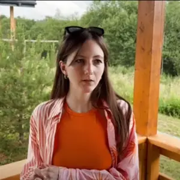
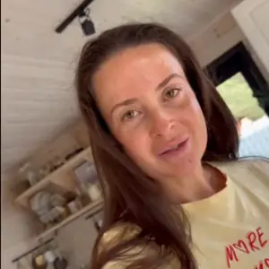
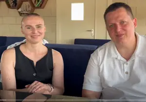
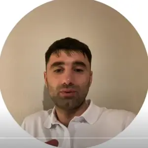
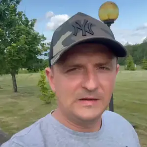
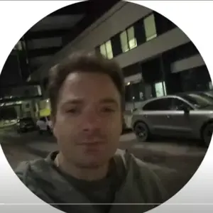
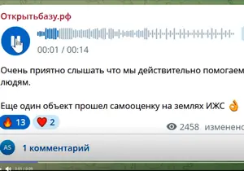
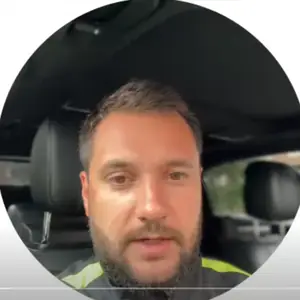
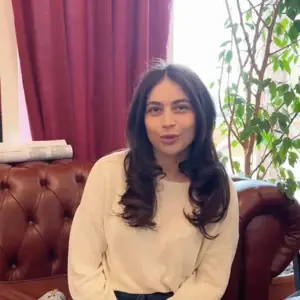